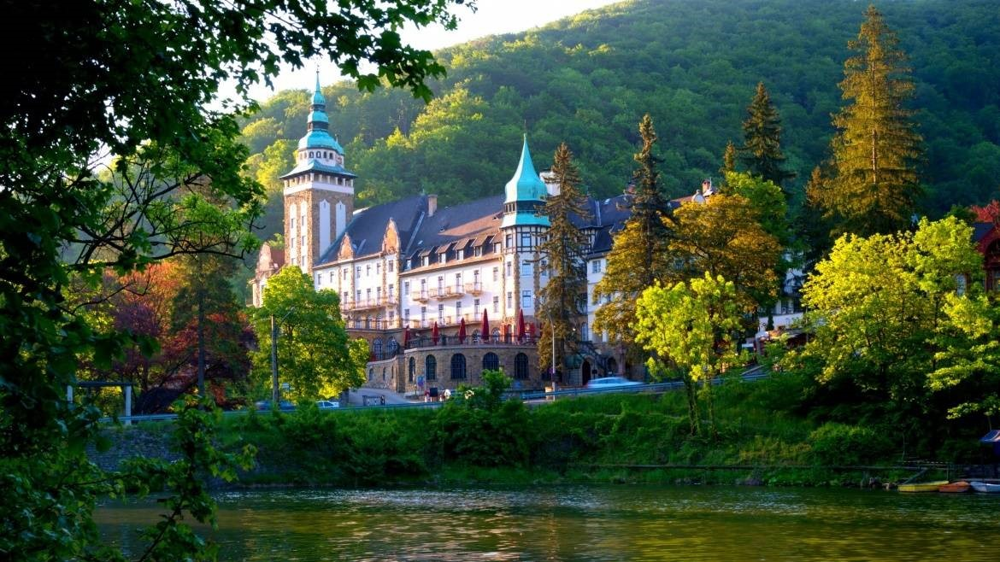

Fedezd fel a Misztikus Rengeteget: A Bükki Nemzeti Park!
Gondoltál már arra, milyen lehet egy olyan helyen kalandozni, ahol az ország legmagasabban fekvő, ősi bükkerdői suttognak a szélben, és a drámai mészkősziklák tetejéről tiszta időben akár a Tátra csúcsaiig is ellátni? A Bükki Nemzeti Park hazánk egyik legvadregényesebb és legváltozatosabb hegyvidéki tája. Az 1977-ben alapított park nemcsak a monumentális hegycsúcsok és a mély szurdokvölgyek világa, hanem a nagyragadozók – a farkasok és hiúzok – otthona is. Itt a természet még az úr, a fák között megbúvó barlangok és kristálytiszta források pedig kaput nyitnak egy olyan világba, ahol a digitális zaj azonnal elcsendesedik.
Észak és Nyugat kapuja (Szilvásvárad, Bélapátfalva és a lovas élmények)
Ez a vidék a robusztus sziklafalak, a zubogó patakok és a világhírű lipicai lovak otthona. Ideális kiindulópont a családoknak és a látványos programok kedvelőinek.
Állandó látnivalók
Hazánk egyik legnépszerűbb és legszebb kirándulóhelye. A völgyben kanyargó patak mentén sétálva megcsodálhatod a mésztufalépcsőkön kecsesen lezúduló Fátyol-vízesést, a Szikla-forrást, a pisztrángostavakat és az ősember egykori lakóhelyét, az Istállós-kői-barlangot. A völgybe a híres Szilvásváradi Erdei Vasúttal is bedöccenhetsz.
A Bükk nyugati bástyája. A monumentális, egykori kőbánya által lépcsőzetesre vágott Bél-kő sziklafal lélegzetelállító látvány. A hegy lábánál fekszik hazánk egyetlen épségben maradt középkori ciszterci apátsági temploma (1232-ből).
Bélapátfalvi ciszterci apátság Forrás: www.bnpi.hu
A Bükk nyugati szélén lévő Szarvaskő falu feletti szikla, ahonnan a kanyargó Eger-patak völgyére és a vasúti viaduktra nyílik az ország egyik legszebb, szinte svájci jellegű panorámája.
A Bükk északi lábánál, meredek hegyek között elterülő, fjord-szerű, lenyűgöző horgásztó, amely körül egy teljesen autómentes aszfaltút vezet, így tökéletes egy nyugodt családi sétához vagy biciklizéshez.
Szilvásvárad a világhírű, hófehér lipicai lovak otthona. A modern Lipicai Lovasközpont stadionjában és lovaspályáján májustól szeptemberig szinte minden hónapban tartanak nagyszabású nemzetközi fogathajtó versenyeket, díjugrató bajnokságokat és látványos lovas gálákat, amelyek az egész országból vonzzák a lovassportok szerelmeseit.
Kelet varázsa (Lillafüred, Szeleta Park és Miskolc)
A Bükk keleti oldala a romantikus palotákról, a jégkorszaki barlangokról és a legújabb interaktív kiállításokról szól. Itt a kultúra és a természet tökéletesen egybefonódik.
Állandó látnivalók
A meseszép neoreneszánsz Palotaszálló lábánál elterülő függőkertekben sétálva megcsodálhatod az ország legmagasabb, 20 méterről lezúduló lillafüredi vízesését, csónakázhatsz a zöldellő hegyek által körbeölelt Hámori-tavon, vagy felfedezheted a különleges Anna-mésztufabarlangot és a Szent István-cseppkőbarlangot.

Hunguest Hotel Palota és a Hámori-tó Forrás: www.vjm.hu
A nemzeti park legújabb, csúcstechnológiás látogatóközpontja a Szeleta-barlang lábánál. Egy interaktív „jégkorszaki időutazáson” mutatja be a Bükk ősemberének (a Szeleta-kultúra) titkait és az egykori barlangi medvék világát.
Hazánk legjelentősebb filmfesztiválja, amelynek ideje alatt Lillafüred és Miskolc is megtelik élettel, szabadtéri vetítésekkel és külföldi filmesekkel.
A Magas-Bükk (A Fennsík, a Csillagda és a bakancsos túrák)
A hegység legmagasabban fekvő, érintetlen szíve. Ez a terület a csendre vágyó, komolyabb túrázók és az éjszakai égbolt szerelmeseinek oázisa.
Állandó látnivalók
A hegység leglenyűgözőbb része a 800 méter feletti magasságban elterülő, hullámzó Bükk-fennsík a különleges karsztformáival (töbrökkel, víznyelőkkel). A fennsík déli peremén sorakoznak a híres „Kövek” (Tar-kő, Három-kő, Istállós-kő), amelyek hatalmas, függőleges mészkőszirtjeiről olyan lélegzetelállító panoráma nyílik az országra, amit sehol máshol nem tapasztalhatsz meg.
Közép-Európa egyik legmodernebb csillagászati látogatóközpontja, amely a fényszennyezéstől védett Bükki Csillagoségbolt-park szívében található. Az interaktív kiállítás, a csúcstechnológiás planetárium és az óriási távcsövek segítségével nemcsak a nappali égboltot és a Nap kitöréseit tanulmányozhatod, hanem az éjszakai univerzum titkaiba is beleshetsz.
Egy fokozottan védett, misztikus terület a fennsíkon, ahol több mint 150-200 éve egyetlen fához sem nyúlt emberi kéz. A gigantikus, kidőlt, mohával borított bükkmatuzsálemek között sétálva (kizárólag a kijelölt turistaúton!) látható, hogyan újul meg a természet önmagától.
Vár-hegy erdőrezervátumból kilátás a Vörös-kő sziklás kúpjára Forrás: www.turistamagazin.hu
Szezonális rendezvények
Ez a Bükk legnagyobb, lenyűgöző természeti attrakciója. Amikor a fennsíkon elolvad a vastag hótakaró, a hegy gyomrában lévő barlangok megtelnek vízzel, és a déli lábaknál található időszakos karsztforrások (Vörös-kő-forrás, Imó-kő-forrás) hatalmas robajjal, akár 1-2 méter magasra törnek fel a földből. Ez a csoda mindössze néhány hétig tart!
Bükkalja (Eger, borok, rejtélyes kaptárkövek és fürdők)
A Bükk déli lankái, ahol a vulkanikus riolittufa formálta a tájat. Ez a vidék a pincék, a gyógyvizek és az ősi kultúrák találkozóhelye.
Állandó látnivalók
A történelmi belváros, az Egri Vár és a Minaret megtekintése után kötelező ellátogatni a Szépasszony-völgy sziklába vájt borpincéihez az igazi Egri Bikavérért.
A puha riolittufába vájt rejtélyes fülkés sziklák (kaptárkövek) és az egykori szegénylakások Noszvajon és Cserépfalun (Kis-Amerika barlangok) fantasztikus kulturális látnivalók.
Tömegközlekedés vagy autó: A Szalajka-völgy és Lillafüred hétvégenként rendkívül zsúfolt, a parkolás nehézkes és drága lehet. Ha teheted, vedd igénybe a Miskolcról vagy Egerből induló sűrű buszjáratokat, vagy utazz a kisvasutakkal!
Készülj fel a hegyi klímára: A Bükk-fennsíkon a hőmérséklet mindig 5-8 °C-kal alacsonyabb, mint a hegy lábánál fekvő városokban. Sőt, a fennsíki töbrökben még nyári éjszakákon is mérnek fagypont körüli hőmérsékletet! Meleg, réteges ruha és szélálló dzseki mindig legyen a hátizsákodban.
Vadvédelem és medvék: Mivel a Bükkben az utóbbi években bizonyítottan állandóan jelen van a barna medve és a szürke farkas, a park területén szigorúan tilos letérni a jelzett turistautakról, a szemetet (étoradékot) kötelező hazavinni, a kutyusokat pedig kizárólag pórázon szabad sétáltatni!
A Bükki Nemzeti Park nem csupán egy hely a térképen – ez a tiszta levegő és a magasság szabadsága. A gigantikus bükkfák susogása, a mély barlangok hűvöse és a sziklákról feltáruló végtelen panoráma azonnal kiszakít a hétköznapok rohanásából, és megmutatja, milyen az, amikor megáll az idő.
További információkért keresd fel a Bükki Nemzeti Park hivatalos oldalát: www.bnpi.hu.